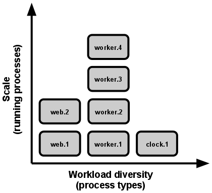

Concurrency
VIII. Concurrency
Scale out via the process model
Any computer program, once run, is represented by one or more processes. Web apps have taken a variety of process-execution forms. For example, PHP processes run as child processes of Apache, started on demand as needed by request volume. Java processes take the opposite approach, with the JVM providing one massive uberprocess that reserves a large block of system resources (CPU and memory) on startup, with concurrency managed internally via threads. In both cases, the running process(es) are only minimally visible to the developers of the app.

In the twelve-factor app, processes are a first class citizen. Processes in the twelve-factor app take strong cues from the unix process model for running service daemons. Using this model, the developer can architect their app to handle diverse workloads by assigning each type of work to a process type. For example, HTTP requests may be handled by a web process, and long-running background tasks handled by a worker process.
This does not exclude individual processes from handling their own internal multiplexing, via threads inside the runtime VM, or the async/evented model found in tools such as EventMachine, Twisted, or Node.js. But an individual VM can only grow so large (vertical scale), so the application must also be able to span multiple processes running on multiple physical machines.
The process model truly shines when it comes time to scale out. The share-nothing, horizontally partitionable nature of twelve-factor app processes means that adding more concurrency is a simple and reliable operation. The array of process types and number of processes of each type is known as the process formation.
Twelve-factor app processes should never daemonize or write PID files. Instead, rely on the operating system's process manager (such as Upstart, a distributed process manager on a cloud platform, or a tool like Foreman in development) to manage output streams, respond to crashed processes, and handle user-initiated restarts and shutdowns.